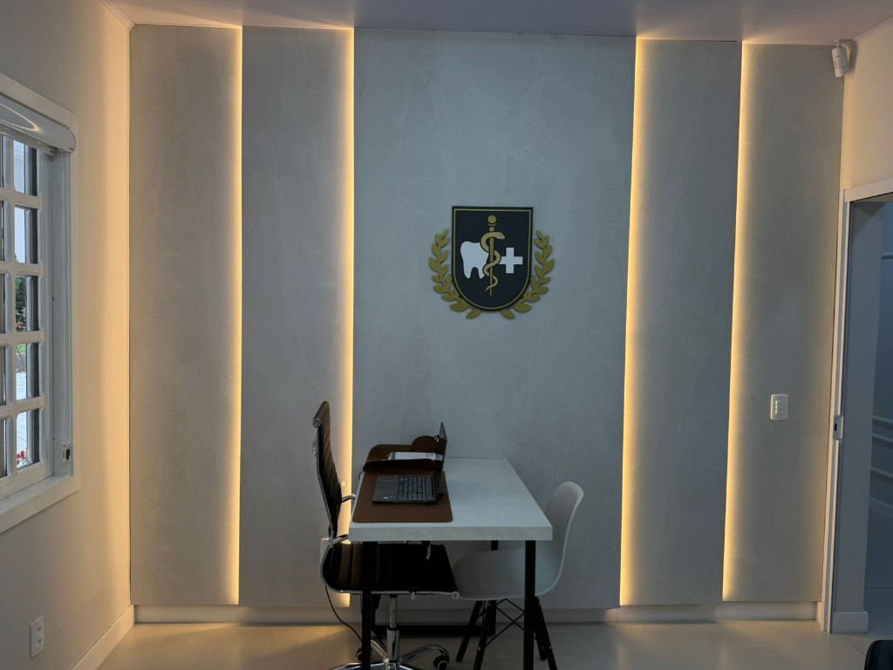

Um lugar com história, agora dedicado à sua saúde
O imóvel que hoje abriga a Buba Clínica Integrada carrega consigo uma rica história que faz parte da memória de Itaiópolis. Esta casa, que testemunhou décadas de transformações na cidade, foi cuidadosamente restaurada e adaptada para se tornar um espaço dedicado ao cuidado da saúde e bem-estar.
Quando iniciamos o projeto da clínica, não queríamos apenas criar um novo estabelecimento de saúde, mas também preservar a identidade e a história deste lugar especial. A arquitetura foi respeitada, mantendo características que contam a trajetória do imóvel, enquanto adaptamos os espaços internos para atender às necessidades modernas de uma clínica integrada.
Hoje, ao entrar na Buba Clínica Integrada, você encontrará um ambiente que harmoniza o tradicional com o contemporâneo, onde cada consultório foi pensado para oferecer conforto e acolhimento. A casa continua a servir à comunidade, agora com um propósito renovado: cuidar da saúde das pessoas que aqui nasceram, cresceram e fazem de Itaiópolis seu lar.
Esta transformação representa mais do que uma mudança física do espaço: simboliza a continuidade do cuidado e do compromisso com a comunidade, mantendo viva a história deste lugar especial enquanto construímos o futuro da saúde integrada em nossa cidade.



Venha conhecer nosso espaço e descubra como história e modernidade se encontram para cuidar da sua saúde
Veja Como Chegar